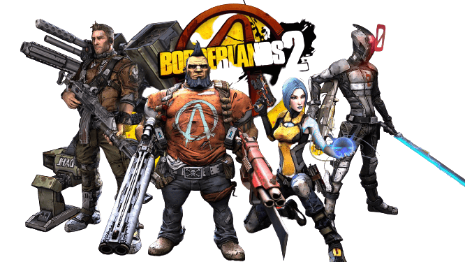

Bioshock is a first person horror game with an amazing atmosphere, featuring enemies around every corner.
You can use the environment to take out multiple enemies or bigger enemies.
It has one of the best soundtracks, using old-fashioned music.
The engaging story keeps you on the edge of your seat.
It has unique weapons, each with different upgrades.
Borderlands 2 is a looter shooter game where you fight different types of enemies.
It has four playable characters, each with a unique ability.
It offers many types of weapons, each with different stats.
Hades is a top down roguelite where the son of Hades escapes the underworld.
It has a great story, but the pacing depends on how many runs it takes to complete.
It offers many different weapons that you can upgrade.
Every time you die, you can upgrade your overall stats to make runs easier.
After completing one run, you can increase the difficulty in different ways and get more rewards.
This game is based on Greek mythology.
Steam
Epic Games
EA Launcher
Ubisoft Launcher